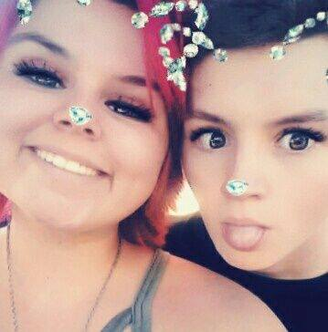
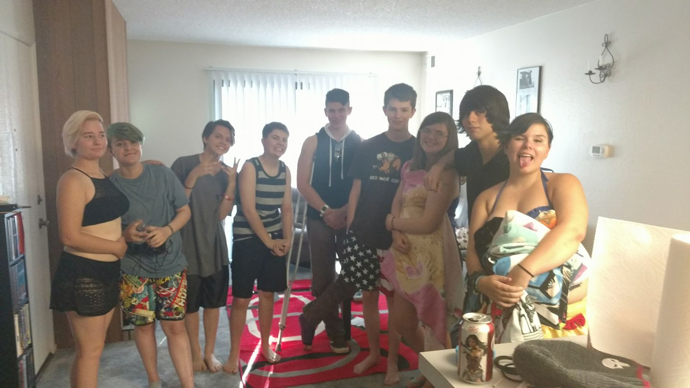
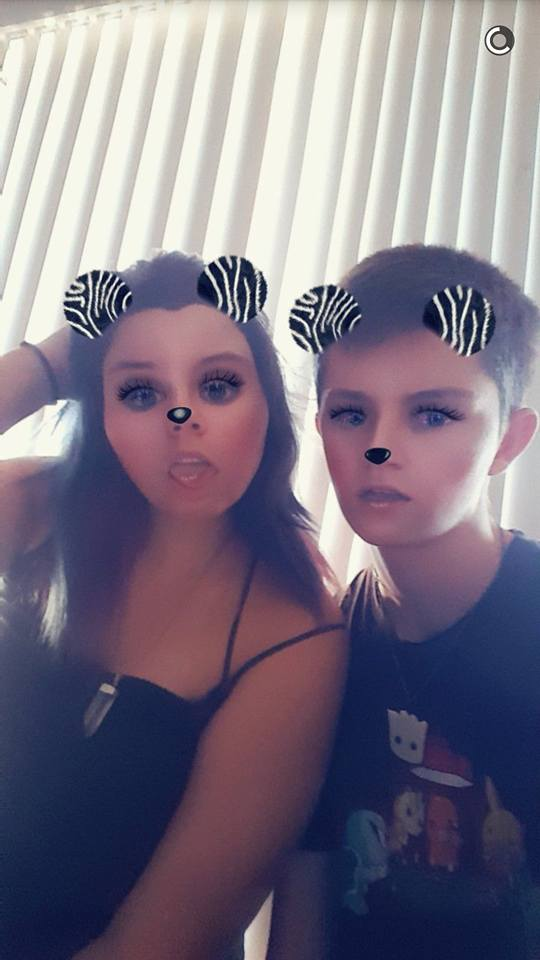
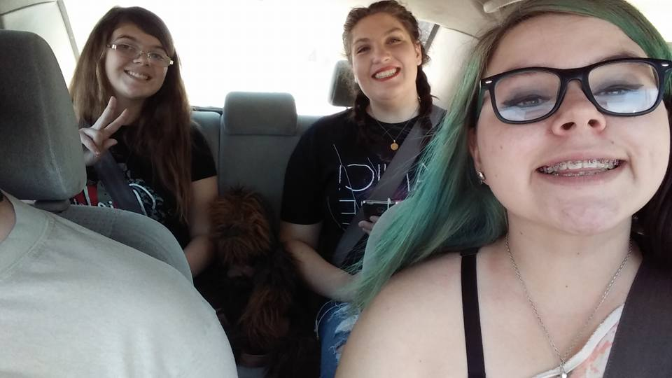
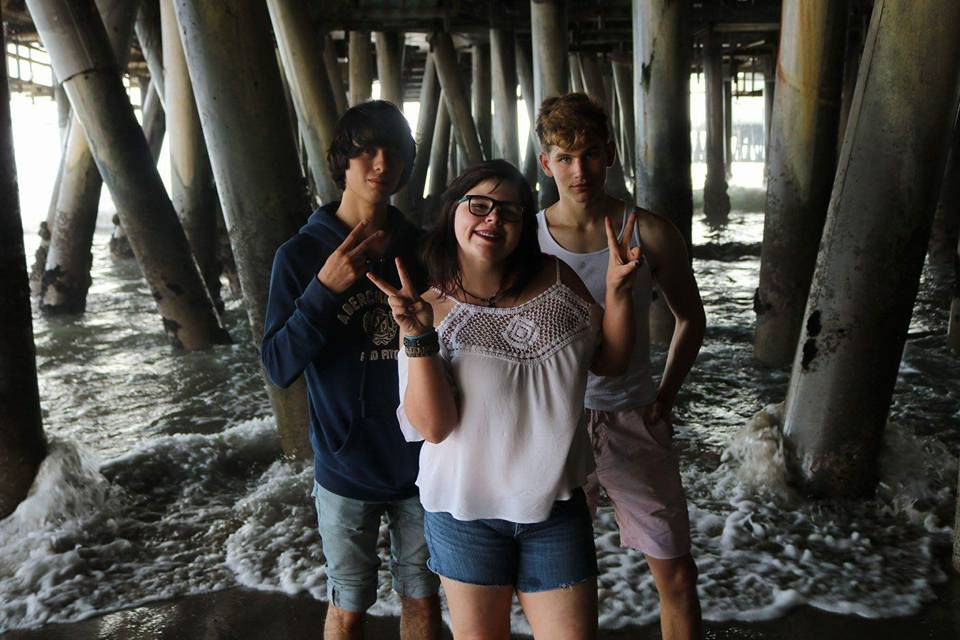
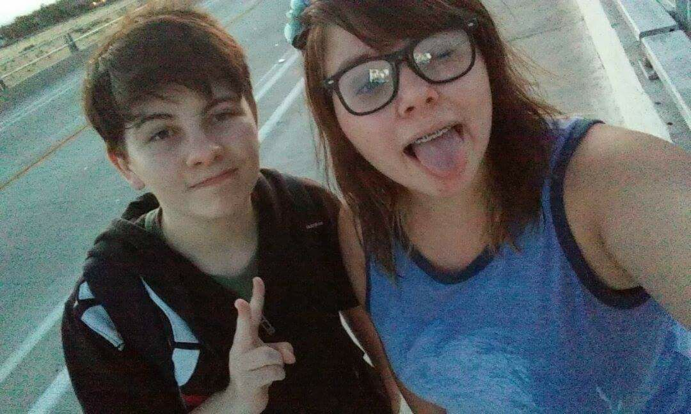
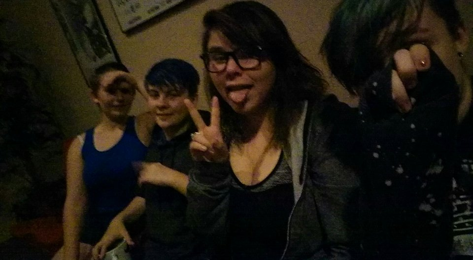
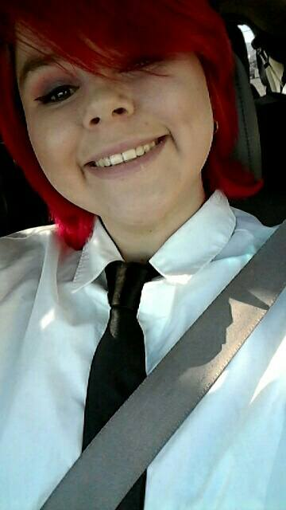

Home
Portfolio
Vocabulary
About Me
About Me!

My Family
- I live with my dad in Lancaster, CA.
- My mom lives in Englewood, CO.
- I have two brothers. Nikolas is 19 and Tyler is 6, which makes me the middle child. Both of them live in CO with my mom.
School
- I am a 12th grade student at Lancaster High School.
- I am in 3 AP classes.
- I do a lot of extra curriculars at school.
- I am the Editor in Chief of the Yearbook for my school.
- I am the President of the Speech and Poetry Club.
- I am the Secretary of the Mock Trial team.
- I am also involved in the LINK Crew and Interact clubs at my school.
Future Plans
- Currently, my plan is to go to college at Johnson and Wales University in either Denver, CO or in Providence, RI.
- I plan to Major in Sociology and Psychology.
- My dream job is to be a social worker for the foster care system and ensure that any child is safe and has a protected childhood.
Social Life
- I have a boyfriend named Anthony who I have been dating for 19 months.
- I have a small group of close friends including Kirsten, Sarah, Jean, Dane, Anthony, Hailie, Lizzy, and August.

- I have known Anthony for 5 years now and we have been best friends for most of them.
"
- I have also known Kirsten and Sarah for 5 years now. Sarah and I didn't really become friends until the end of 7th grade.

- I have known Jean for 3 years but I didn't really become friends with him until a year ago. At this point, he is basically my brother.
- I have also known Dane for 3 years, but we didn't really become friends until about a year ago either.

- I have known August for 7 months. We met at a Mock Trial match where we were competeing against each other. He is my lemon and we spend almost every weekend together.

- I have known Hailie and Lizzy for 5 months. They are some of the best friends a person could ask for.

- I love all of my friends very much and they mean everything to me.
Fun Facts About Me!

- I am 17 years old.
- My favorite colors are burgundy, neon green, and black.
- Jean's nicknames of choice for me are SeaBry and Lil' Sis.
- I am August's lemon.
- I love to do hair and makeup for fun.
- Sinbad was my favorite childhood movie.
- Rent is my favorite musical.
- I love to sing for fun.
- I love to cook and bake.
- I love animals. Raccoons are my favorites.
- I love to write poetry and create things.
- I like to stay organized so I can at least pretend there's some order in my life.
- I have been in Girl Scouts for the last 7 years of my life and will be finished with it this year.
- I had braces for 2 years and 7 months.